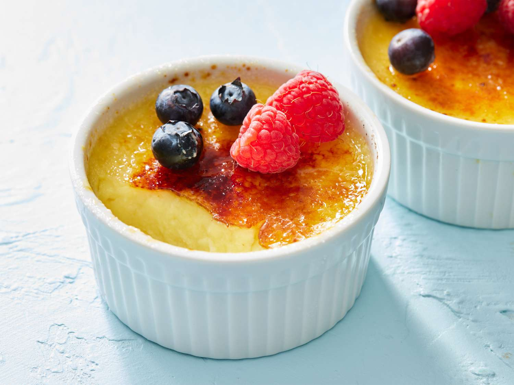

Back to Home
Crème brûlée

Description
Crème brûlée is a classic French dessert known for its rich, creamy custard base topped with a thin, crisp layer of caramelized sugar. Typically made with heavy cream, egg yolks, vanilla, and sugar, it is baked slowly in a water bath for a smooth texture. The highlight of the dessert is the caramelized topping, created by sprinkling sugar on the surface and torching it until it forms a golden, glassy crust. Served chilled, it offers a delightful contrast between the cool, velvety custard and the warm, brittle sugar shell.
Crème brûlée: How to Make?
- Preheat & Prepare: Preheat your oven to 150°C (300°F) and place 4 ramekins in a deep baking dish.
- Heat the Cream: Warm heavy cream with vanilla until it just starts to simmer.
- Mix Yolks & Sugar: Whisk egg yolks and sugar until light and slightly thickened.
- Combine Mixtures: Slowly whisk warm cream into the yolk mixture to temper it.
- Strain & Pour: Strain the mixture and pour evenly into the ramekins.
- Bake in Water Bath: Add hot water around ramekins and bake for 30–40 minutes.
- Chill & Caramelize: Chill for 2+ hours, then sprinkle sugar and torch until golden.